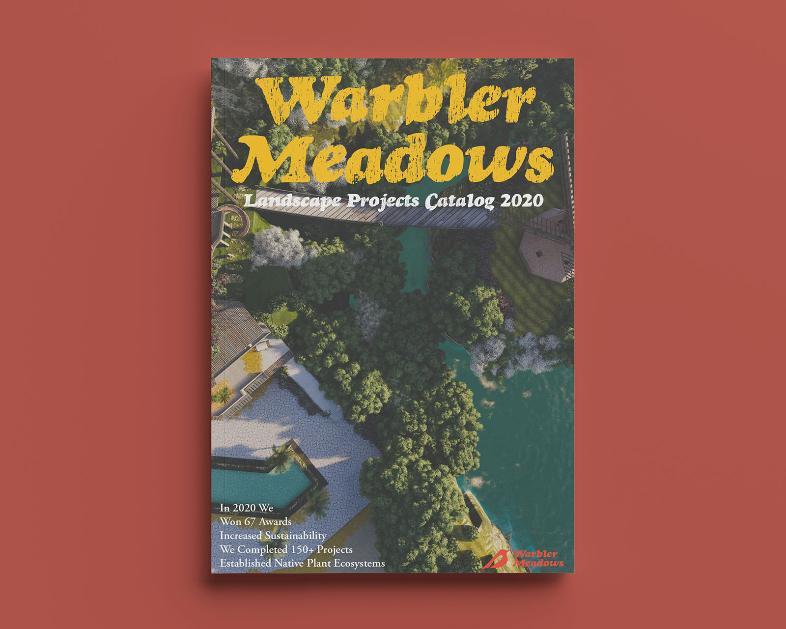
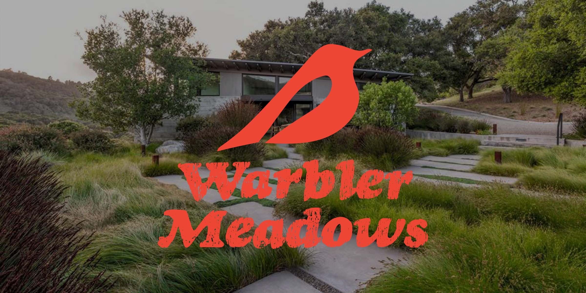
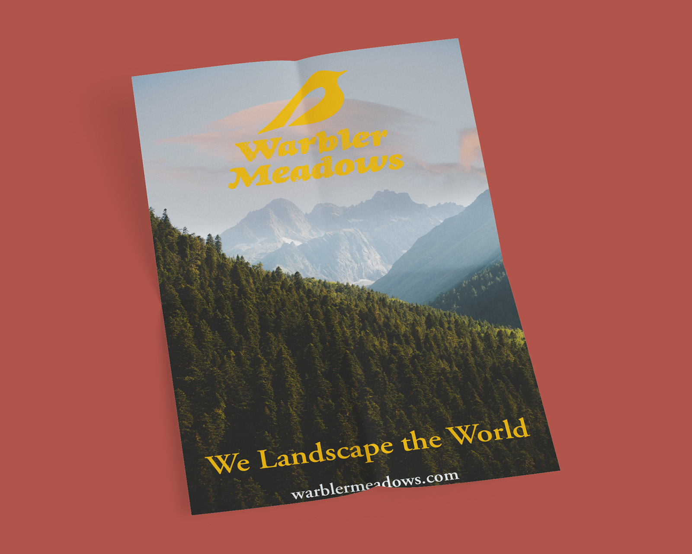
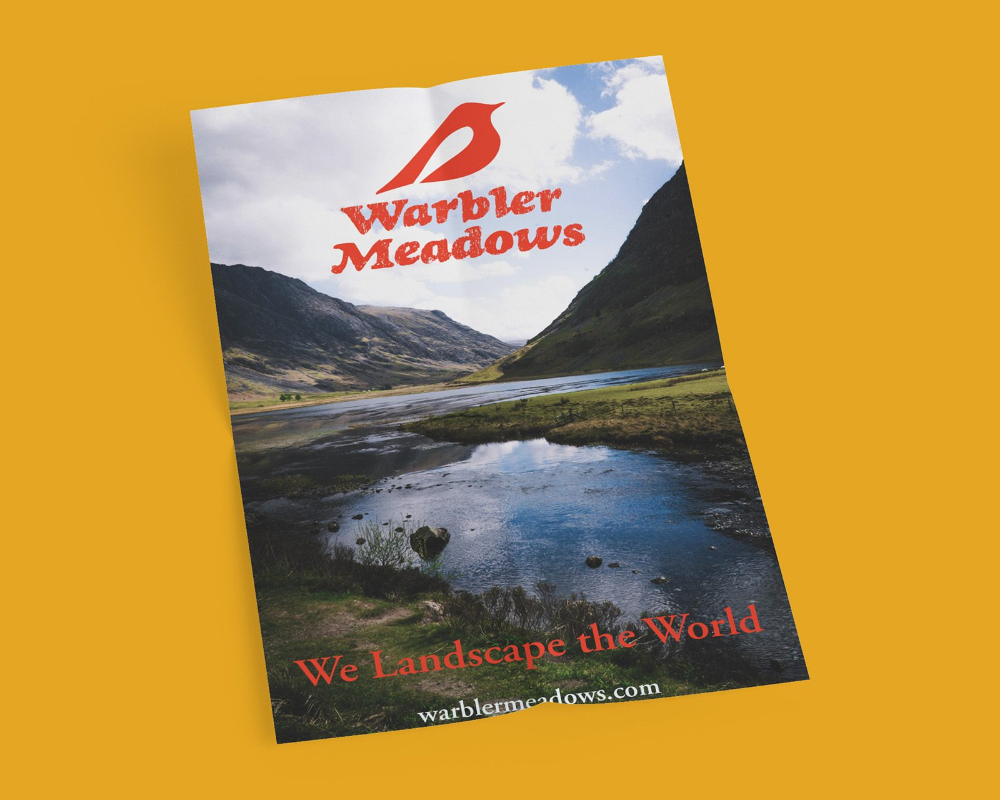
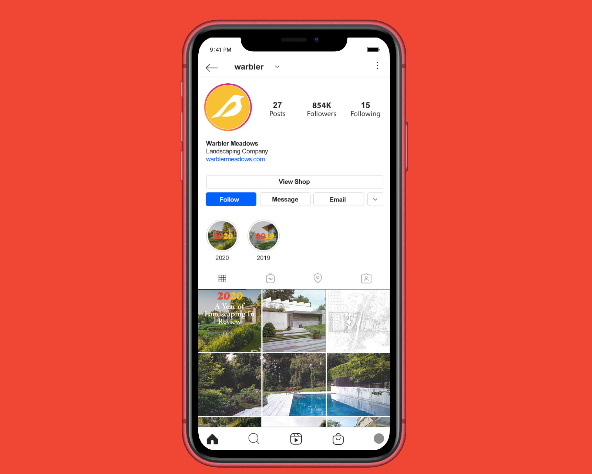

Warbler Meadows
December 2020 – Visual Identity & Print Design

Warbler Meadows is a fictional high-end landscaping company based in the United States. While engaging in landscape services, Warbler Meadows brand image is expanded through its yearly catalog publication, displaying their biggest projects of the year. Additionally, Warbler Meadows uses posters and Instagram to put forward their image and work to the public. This project was part of an assignment for a university design course.
The brand’s main logo is the silhouette of a warbler with the wing becoming negative space to increase identifiability of the company. The color palette consists of a vibrant yellow and red - two colors found on a warbler - and signifies the vibrant landscaping brought by Warbler Meadows’s work. The publications - posters and catalog - follow a photo style approach of letting the images speak for themselves. The logo is either minimally invasive on publications or blends into the imagery to give full attention the stunning visuals of Warbler Meadows’s work.



